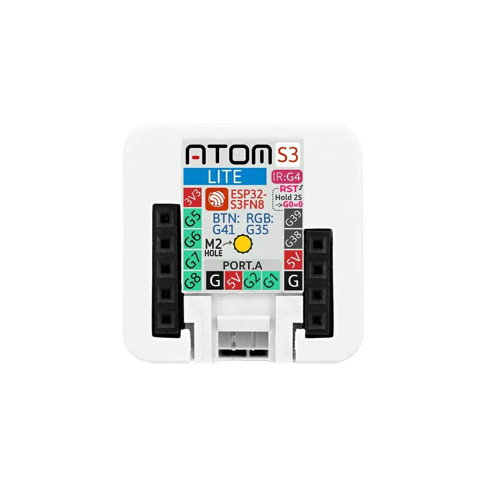

tiny Grove target
M5 AtomS3 Lite: ESP32-S3 firmware, Grove, UART and GPIO
Use the M5 AtomS3 Lite when you need a tiny ESP32-S3 target for Grove/Header workflows, simple GPIO checks and small fixtures. It keeps the Bit Pirate setup compact for quick UART, I2C and GPIO checks where only a few accessible pins are needed.

Board-specific guide for M5 AtomS3 Lite firmware, Grove/Header wiring, compact GPIO checks and ESP32-S3 debugging.
compatibility
AtomS3 Lite board overview
Use this page to decide whether this board is the right physical target before flashing ESP32 Bit Pirate.
practical tasks
AtomS3 Lite supported workflows
These workflows highlight good starting points for this board; SPI, I2C, UART and GPIO-style modes can be used when the board mapping and wiring expose the needed signals.
Use Web Serial for quick CLI access, UART helper work and compact USB-connected checks.
Wire Grove/Header modules, memory chips and bus checks when the selected pin mapping exposes the required signals.
Pulse, measure or listen on exposed pins for fixtures, logic checks and simple automation.
Use IR TX workflows where the board mapping supports the task.
AtomS3 Lite pin mapping and wiring notes
The wiki lists AtomS3 Lite Grove as GPIO1/GPIO2 and onboard GPIOs as GPIO5/GPIO6/GPIO7/GPIO8/GPIO38/GPIO39. Use Grove/Header pins deliberately and keep onboard button, RGB and internal functions in mind before assigning GPIO.
Always verify voltage and pin mapping before connecting a target. The ESP32-S3 side is not 5 V tolerant unless external level shifting or the Dock path is used correctly.
useful pages
AtomS3 Lite useful next pages
Move from this board to the protocol mode, task recipe, module page or browser tool that fits the hardware you want to test.
Protocol modes
Useful recipes
Use the task guide for wiring, commands and troubleshooting.
Pulse GPIO microsecondsUse the task guide for wiring, commands and troubleshooting.
Check logic levels before wiringUse the task guide for wiring, commands and troubleshooting.
Capture infrared remoteUse the task guide for wiring, commands and troubleshooting.
Tools and hardware
Open the browser tool or hardware page that supports this board workflow.
Web FlasherOpen the browser tool or hardware page that supports this board workflow.
Hardware ecosystemOpen the browser tool or hardware page that supports this board workflow.
Modules and target chipsOpen the browser tool or hardware page that supports this board workflow.
board-specific answers
AtomS3 Lite FAQ
Quick answers to confirm board support, practical limits and recommended workflows before flashing ESP32 Bit Pirate.
Is AtomS3 Lite supported?
Yes. It has a dedicated supported firmware route in the boards section.
What is it best for?
Tiny Grove/Header workflows, simple GPIO checks and compact fixtures.
Is it suitable for complex multi-pin protocols?
Only when the required pins fit. For broad wiring use ESP32-S3 DevKit.
Can it run Web Serial workflows?
Yes after flashing the matching build and connecting from a compatible browser.
Does it have a display?
No. Choose Cardputer, T-Embed or M5StickS3 when visual feedback is important.

source project
Part of the ESP32 Bit Pirate ecosystem
ESP32 Bit Pirate combines ESP32-S3 firmware, Web Flasher manifests, browser tools, protocol pages, recipes, supported boards, modules and companion hardware. These board pages help people discover the open-source Bit Pirate project from the board they already own or want to flash.